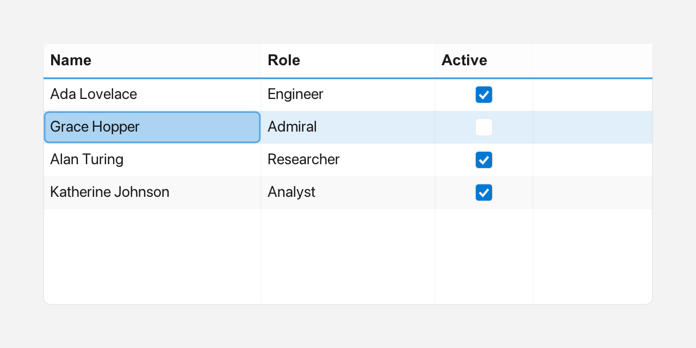

Table
A Table is an editable grid with a header row and scrollable rows. Cells can
hold plain text, a drop-down choice, or a boolean checkbox, and may include
Inline glyphs.

Column headers, rows and a selected cell.
What it's for
Use a Table when your data has several columns and the user needs to read or
edit it in place. A ListView is better for a single column of
choices; a Table is better for records such as a list of people with a name,
an active flag, and a city.
Each column is described by a Table::Column: its label, its width, whether
it is editable, its kind, an optional rich header (headerInline), and, for
choice columns, the list of choices. The kind decides how a cell behaves:
Kind::Text— plain text, edited with a text field.Kind::Choice— a value picked from a short drop-down list.Kind::Bool— a checkbox that toggles on a click.
An Inline is rich text built from plain text, an icon from Icons::*, and a
Color. Use it for header glyphs or colored cell content.
A first example
A window is the operating-system window your app draws into. Window::open
creates it, and if (!win) stops the program if the window could not be opened.
win.add<T>(...) creates a widget inside that window and returns a
reference to it. Rect{x, y, width, height} places the widget. A callback is a
small function you give to a widget so it can call you back when something
happens.
#include <cstdio>
#include <vector>
#include <fluffy/fluffy.hpp>
int main() {
fluffy::Window win = fluffy::Window::open("Table demo", 720, 400);
if (!win) return 1;
auto& tbl = win.add<fluffy::Table>(fluffy::Rect{40, 40, 470, 220});
std::vector<fluffy::Table::Column> cols = {
{"Name", 160, true, fluffy::Table::Column::Kind::Text},
{"Active", 70, true, fluffy::Table::Column::Kind::Bool},
{"City", 140, true, fluffy::Table::Column::Kind::Choice}
};
cols[2].choices = {"Paris", "London", "Berlin"};
tbl.setColumns(cols);
tbl.setHeader(0, fluffy::Inline{} << fluffy::Icons::user << " Name");
tbl.setHeaderBackground(fluffy::Color::fromHex(0xFF4A6FA5));
tbl.setRows({{"Alice", "true", "Paris"}, {"Bob", "false", "London"}});
tbl.onSelect([](int r, int c) { });
tbl.onCellChange([](int r, int c, const std::string& v) { });
win.run();
}
You describe the columns first, including any choices for Choice columns,
and pass them to setColumns. Then setRows fills the grid; each inner list is
one row, with one string per column. onSelect and onCellChange register
callbacks: the first tells you when the selected cell changes, and the second
when an edited cell is committed.
The snippets below assume win and tbl from this example.
Common tasks
Styling the header and rows
tbl.setHeader(0, fluffy::Inline{} << fluffy::Icons::user << " Name");
tbl.setHeaderBackground(fluffy::Color::fromHex(0xFF4A6FA5));
Use setHeaderBackground, setHeaderTextColor, and setHeaderFont for the
header. Row striping and cell text use setCellBackground,
setCellBackgroundAlt, setCellTextColor, and setCellFont.
Adding and editing cells
tbl.setRowsInline({{fluffy::Inline{} << fluffy::Icons::star << " Alice"}});
tbl.addRow({"Carol", "true", "Berlin"});
tbl.addRowInline({fluffy::Inline{} << "Dave"});
tbl.setCell(0, 0, "New");
tbl.setCellInline(0, 0, fluffy::Inline{} << fluffy::Color{200, 40, 40, 255} << "Red");
std::string v = tbl.cell(0, 0);
fluffy::Inline inl = tbl.cellInline(0, 0);
setRows replaces all the data, while addRow and addRowInline add a row at
the end, padded to the column count. The row data is write-only: there is no
rows() getter, so read values through cell(), cellInline(), or
rowCount().
Selecting a cell
tbl.setSelected(1, 0);
int r = tbl.selectedRow();
int c = tbl.selectedCol();
int rc = tbl.rowCount();
int cc = tbl.columnCount();
selectedRow and selectedCol are -1 when nothing is selected.
setSelected(row, col = 0) sets the current cell; an out-of-range row or column
is silently ignored.
Starting an edit programmatically
tbl.beginEdit(0, 0, win);
This opens the editor for a cell as if the user had started editing it.
Loading columns from YAML
Fluffy can also describe widgets in YAML, a plain text format:
Table:
columns: ["Name", "Active", "Age", "City"]
columns also accepts a comma-separated scalar. Rows are set in code; a rows:
key in YAML is silently ignored.
Good to know
Column { label, width = 120, editable = true, kind = Text, headerInline, choices }.setColumnsreplaces all columns and resizes existing rows;addColumnappends one and fillsheaderInlinefromlabel.- Editing depends on the column kind:
Textopens an inlineTextInputon double-click orEnter, andEntercommits;Choiceopens an embeddedComboBoxpopup on double-click;Booltoggles on a single click and is drawn as a 16px rounded checkbox. ArrowandTabmove the selection, and typing starts editing the selected cell.onCellChangefires when a cell is committed by text submit, choice pick, or bool toggle.
Quick reference
Properties
| Property | Type | Description |
|---|---|---|
columns |
vector<Column> |
Headers and widths. setColumns replaces all columns and resizes existing rows; addColumn appends one (auto-inits headerInline from label). |
rows |
— | Cell data, write-only: setRows / setRowsInline / addRow / addRowInline (padded to column count). There is no rows() getter — read via cell() / cellInline() / rowCount(). |
selectedRow / selectedCol |
int |
Current cell (-1 none, read via selectedRow() / selectedCol()). Set with setSelected(row, col=0) — out-of-range row or column is a silent no-op. |
setHeaderBackground / setHeaderTextColor / setHeaderFont |
setters | Header styling. |
setCellBackground / setCellBackgroundAlt / setCellTextColor / setCellFont |
setters | Row striping and text styling. |
Column { label, width=120, editable=true, kind=Text, headerInline, choices }.
Methods
auto& tbl = win.add<fluffy::Table>(fluffy::Rect{40, 40, 470, 220});
std::vector<fluffy::Table::Column> cols = {
{"Name", 160, true, fluffy::Table::Column::Kind::Text},
{"Active", 70, true, fluffy::Table::Column::Kind::Bool},
{"City", 140, true, fluffy::Table::Column::Kind::Choice}
};
cols[2].choices = {"Paris", "London", "Berlin"};
tbl.setColumns(cols);
tbl.setHeader(0, fluffy::Inline{} << fluffy::Icons::user << " Name");
tbl.setHeaderBackground(fluffy::Color::fromHex(0xFF4A6FA5));
tbl.setRows({{"Alice", "true", "Paris"}, {"Bob", "false", "London"}});
tbl.setRowsInline({{fluffy::Inline{} << fluffy::Icons::star << " Alice"}});
tbl.addRow({"Carol", "true", "Berlin"});
tbl.addRowInline({fluffy::Inline{} << "Dave"});
tbl.setCell(0, 0, "New");
tbl.setCellInline(0, 0, fluffy::Inline{} << fluffy::Color{200, 40, 40, 255} << "Red");
std::string v = tbl.cell(0, 0);
fluffy::Inline inl = tbl.cellInline(0, 0);
tbl.setSelected(1, 0);
int r = tbl.selectedRow();
int c = tbl.selectedCol();
int rc = tbl.rowCount();
int cc = tbl.columnCount();
Editing
| Kind | Interaction |
|---|---|
Text |
Double-click or Enter opens an inline TextInput; Enter commits. |
Choice |
Double-click opens an embedded ComboBox popup. |
Bool |
Single click toggles true/false (drawn as 16px rounded checkbox). |
Arrow/Tab moves selection; typing starts editing the selected cell.
Events
| Event | Signature | When |
|---|---|---|
onSelect |
void(int row, int col) |
Selection changes. |
onCellChange |
void(int row, int col, const string& value) |
Cell committed (text submit, choice pick, bool toggle). |
tbl.onSelect([](int r, int c) { });
tbl.onCellChange([](int r, int c, const std::string& v) { });